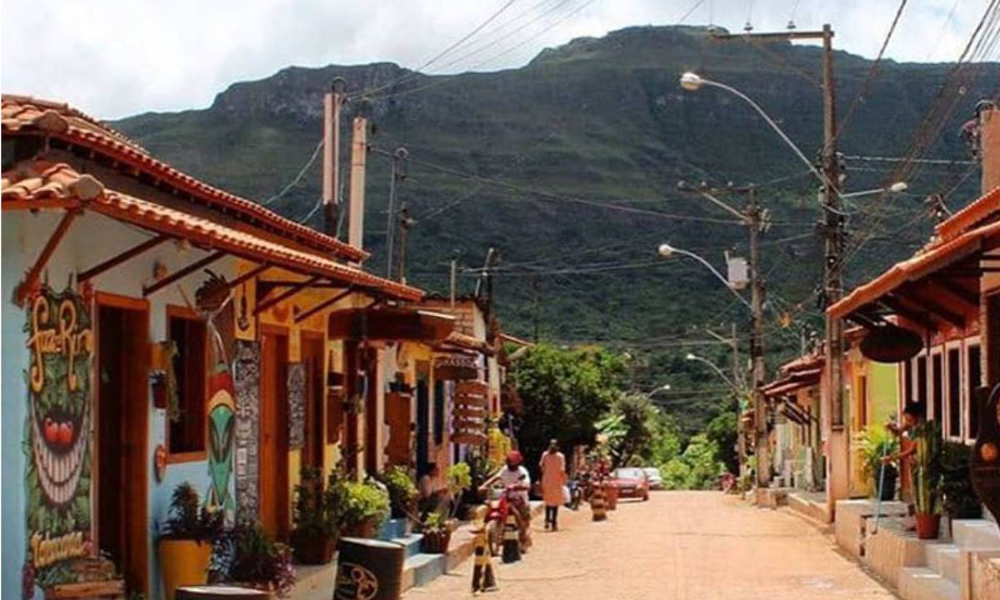
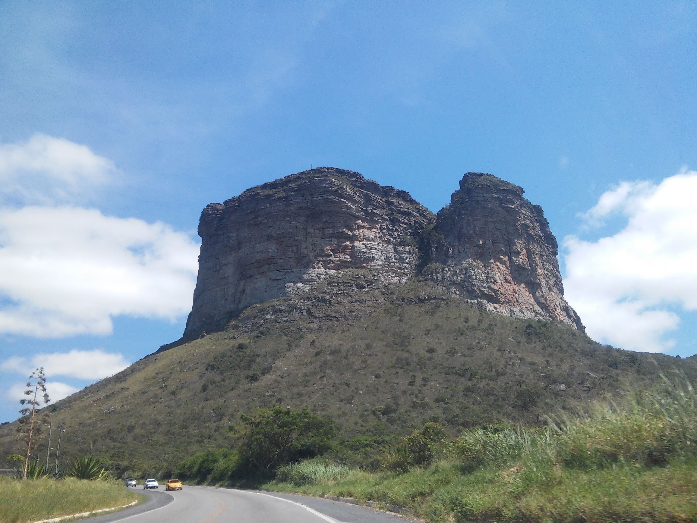
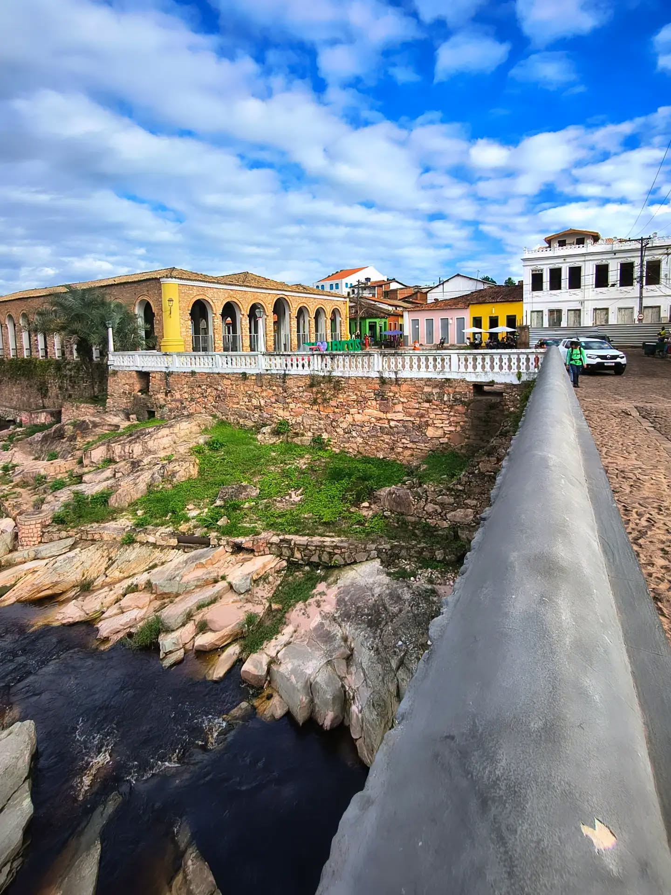
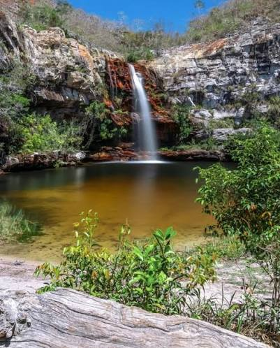
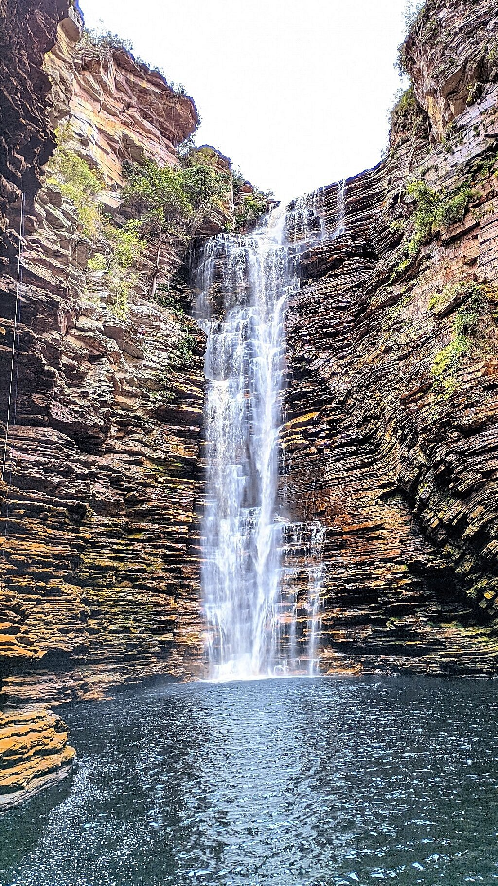

PARADAS QUE VALEM O CAMINHO
Escolha seu próximo mergulho.
Entre vales, poços e salões subterrâneos, cada desvio mostra uma Chapada diferente.

Palmeiras
Vale do Capão
Famoso por sua atmosfera alternativa e comunitária, atrai viajantes do mundo todo que buscam forte conexão com a natureza, terapias holísticas e a prática de ecoturismo avançado

Palmeiras
Morro do Pai Inácio
É o principal cartão-postal da Chapada Diamantina, localizado no município de Palmeiras, na Bahia. Com 1.150 metros de altitude, o topo do platô oferece uma das vistas panorâmicas de 360 graus mais impressionantes da região, sendo o lugar perfeito e mais procurado para assistir a um pôr do sol inesquecível.

Parque Nacional da Chapada Diamantina
Lençóis
Lençóis está cercada por rios de águas avermelhadas, poços cristalinos e trilhas impressionantes.

Coração da Chapada Diamantina
Piatã
Diferente do calor tradicional do interior baiano, a cidade se destaca pelo seu clima de montanha — com temperaturas que frequentemente caem para perto de 12 °C (e até menos no inverno) —, seus casarios coloniais históricos, e por ser a principal referência na produção de cafés especiais premiados do Brasil

Ibicoara
Cachoeira do Buracão
Com uma imponente queda livre de 85 metros de altura escondida no final de um cânion estreito moldado por pedras folhadas, ela oferece uma das experiências mais completas e marcantes de ecoturismo no Brasil.

Itaetê
Poço Encantado
O local abriga uma caverna com um lago subterrâneo de águas incrivelmente cristalinas e de um tom azul profundo. A transparência é tanta que é possível enxergar nitidamente formações rochosas e troncos de árvores submersos a mais de 60 metros de profundidade.